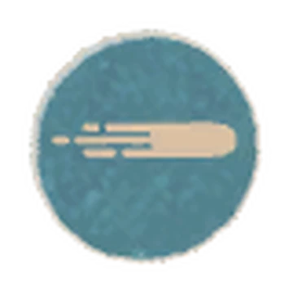
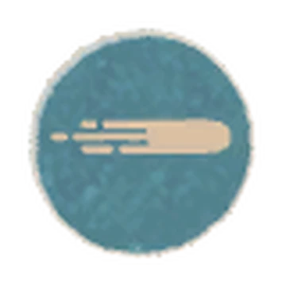

Tiros
Peashooter
Tiro primário de cuphead, pego quando cuphead vai falar com seu avô. Um tiro com uma taxa de disparo bem grande. Pouco dano, porém, versátil e fácil de usar, sendo incrível para uma arma inicial!
SUPER
MEGA BLAST, que é um tiro maior, mais grosso, e mais forte. Ultrapassa o inimigo,dando dano a cada 0.5 segundos.
 

Spread
Um dos três primeiros tiros que podem ser desbloqueados na loja, custa 4 moedas. Possui uma taxa de disparo gigante, atira 6 tiros mútuos, com pouco alcance e pouco dano. É necessário estar perto do inimigo para se usar, deixando cuphead de certa forma "vulnerável"
SUPER
EIGHT WAY, em que cuphead solta setas gigantes para todos os lados da tela, pouco dano, porém garante que pelo menos 1 tiro irá acertar.


Chaser
Também pode ser desbloqueado no início do jogo,custa 3 moedas. Não tem uma taxa de disparo tão grande quanto PEASHOOTER ou SPREAD,mas possui um tiro que é um míssil. Pouco dano,porém,o tiro sempre irá acertar o inimigo,não importando aonde esteja.
SUPER
Possui como super o CHAOS ORBIT,que consiste em cuphead criar uma cúpula de proteção feita de tiros.